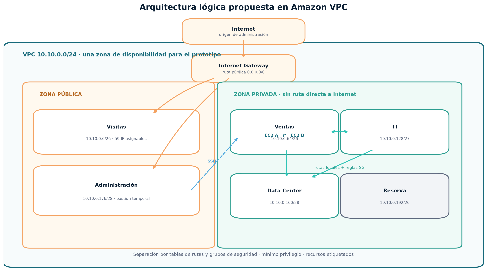
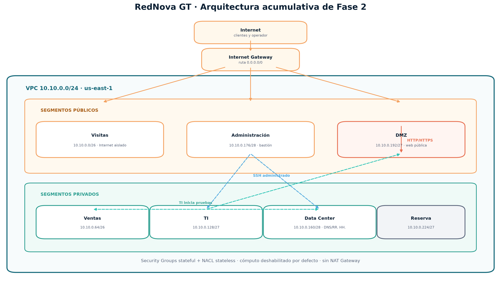

CC3067 Redes · Sección 10 · Grupo 1
Proyecto Final de Redes
Fases 1 y 2
Diseño e implementación acumulativa de una red empresarial segmentada en AWS para RedNova GT
Universidad del Valle de Guatemala · Noviembre de 2026
Alcance acumulativo
Objetivo de la solución
Necesidad
Separar usuarios, servicios internos, administración y exposición pública sin perder trazabilidad ni control de costos.
Resultado diseñado
Una VPC 10.10.0.0/24 con siete bloques, controles stateful y stateless, DNS interno, intranet, DMZ y clientes reproducibles.
Base demostrada
Fase 1

Arquitectura ampliada
Fase 2

Direccionamiento
Segmentación de la VPC
| Segmento | CIDR | Uso | Exposición |
|---|---|---|---|
| Visitas | 10.10.0.0/26 | Cliente temporal | Internet saliente |
| Ventas | 10.10.0.64/26 | Usuarios internos | Privada |
| TI | 10.10.0.128/27 | Pruebas autorizadas | Privada |
| Data Center | 10.10.0.160/28 | DNS e intranet | Privada |
| Administración | 10.10.0.176/28 | Bastión | SSH /32 |
| DMZ | 10.10.0.192/27 | Web pública | HTTP y HTTPS |
| Reserva | 10.10.0.224/27 | Crecimiento | Sin asignar |
Defensa por capas
Security Groups, NACL y nftables
- Los Security Groups controlan servicios por instancia y conservan estado.
- Las NACL restringen flujos por subred y declaran retornos efímeros e ICMP.
nftablesaplica políticadropen los clientes y servidores endurecidos.- TI obtiene
nftablespor el Gateway Endpoint de S3, sin Internet general. - SSH público permanece cerrado. El acceso administrativo pasa por el bastión.
Servicios internos
DNS e intranet de Recursos Humanos
BIND9
rrhh.rednova.internal resuelve a 10.10.0.165. Solo Ventas, TI, Data Center y Administración pueden consultar.
Nginx interno
La intranet responde por HTTP a redes autorizadas. Visitas, DMZ e Internet quedan bloqueados por varias capas.
TI espera a BIND9, comprueba la respuesta y valida la resolución del sistema antes de declararse listo.
Servicio público
Web de Ventas en la DMZ
- EC2 en
10.10.0.196con Elastic IP temporal. - HTTP público y HTTPS opcional cuando exista dominio autorizado.
- Nginx limita métodos, oculta versión y añade cabeceras de seguridad.
- La DMZ no inicia conexiones hacia redes internas.
- El recurso se retira al cerrar la ventana para controlar costos.
Políticas de usuarios
Visitas y TI
Visitas
Accede a HTTP, HTTPS y DNS público. No entra a la VPC ni expone servicios a Internet.
TI
Inicia pruebas hacia todos los segmentos. Las demás redes no pueden iniciar conexiones laterales hacia TI.
Comprobación local
Estado verificado
| Control | Resultado |
|---|---|
| Terraform format y validate | Correcto |
| Validador de Pablo | Sin fallas |
| Validador de Andrés | 28 correctas, 3 omitidas, 0 fallidas |
| Validador de Roberto | 55 correctas, 3 omitidas, 0 fallidas |
| Validador de clientes y matriz | 65 correctas, 0 omitidas, 0 fallidas |
| Pruebas reales F2-01 a F2-13 | 36 correctas, 3 omitidas, 0 contradictorias |
Ventana AWS
Ejecución y evidencias
Pablo Daniel Barillas
Revisa las salidas F2-01 a F2-13 e integra las capturas, el informe y la presentación.
Andrés Rafael Chivalán
Ejecuta la ventana, confirma identidad, región, permisos y estado, recopila capturas y revisa recursos y costos.
Resultado: 36 controles correctos, 3 omisiones documentadas y cero recursos etiquetados al cierre.
Equipo
Grupo 1 · Sección 10
La evidencia visual de la web pública ya está incorporada. Pendiente administrativo: confirmar el carné de Genser.